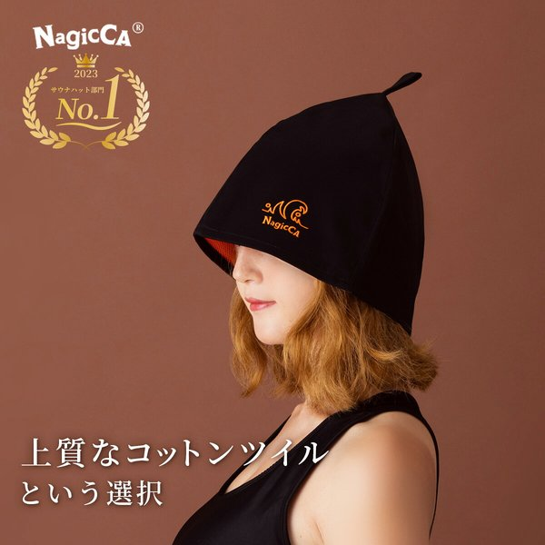
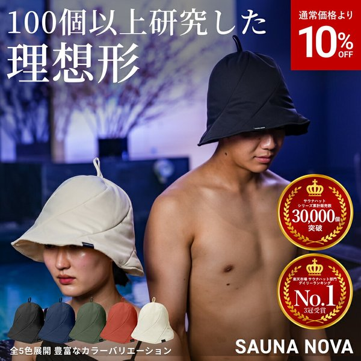
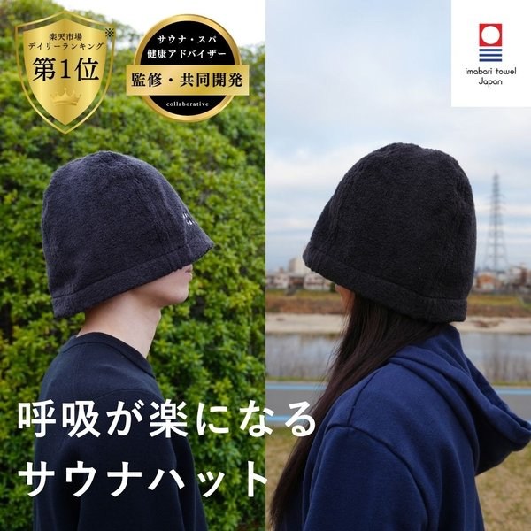
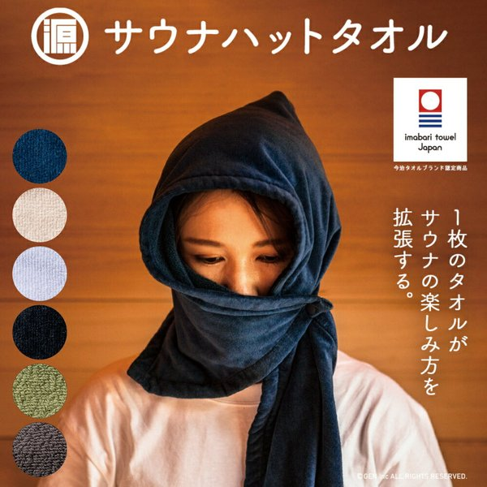
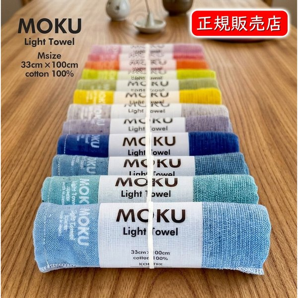
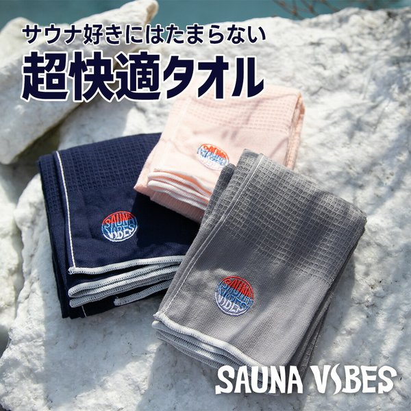
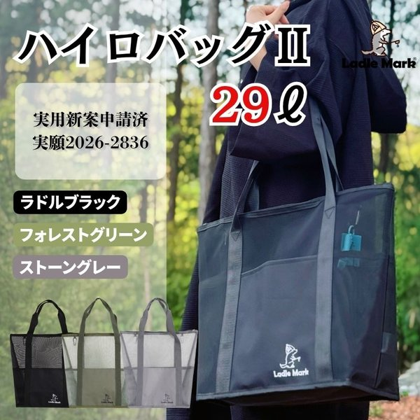
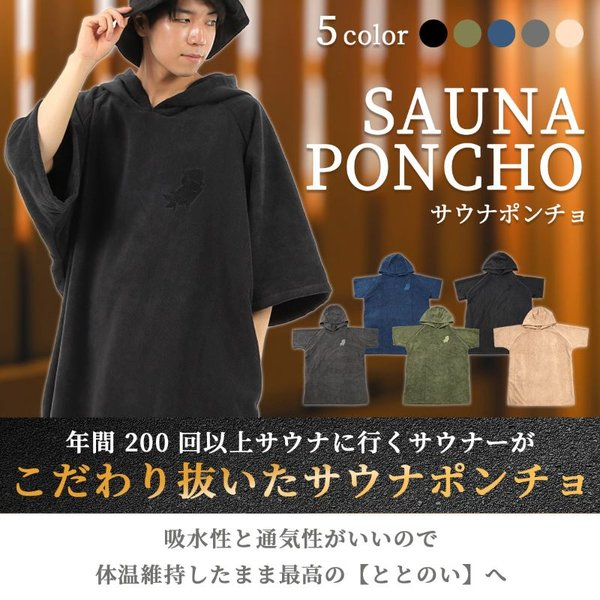
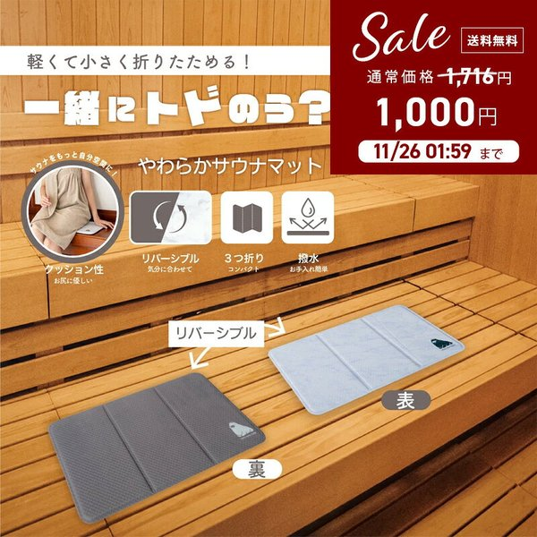
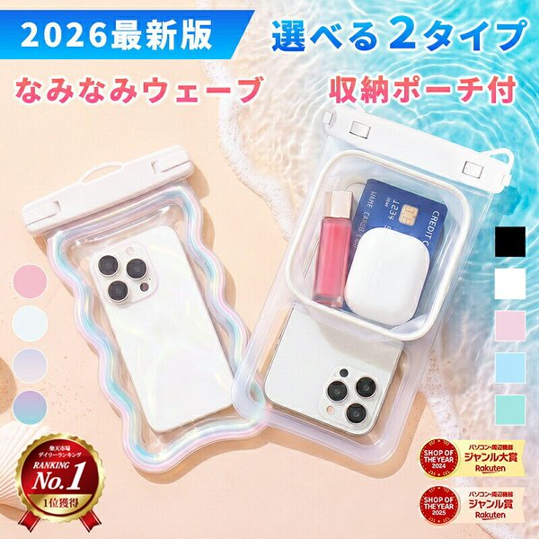

【2026年冬・サウナとスーパー銭湯】サウナハット・今治タオル・メッシュスパバッグ・サウナマット・ポンチョ・防水スマホケース10選｜NagicCA・SAUNANOVA・Maison Sauna・源商店・コンテックス・SAUNA VIBES・Ladle Mark・lowliu・トドを実売価格で比較
サウナに行くたびに、タオルと着替えとスマホをどう持ち込むかで迷います。ハットをかぶれば頭が熱くなりにくく、ポンチョがあれば脱衣所で体を拭く手間も減ります。持ち物が揃うと、サウナ室で過ごす時間そのものが変わります。
選ぶ軸は3つです。「まず頭と体を守る道具」。サウナハットは断熱の仕組みとサイズ、タオルは長さと速乾性で選びます。「次に持ち運び」。メッシュバッグとポンチョがあると、濡れたタオルをそのまま入れられ、帰り道まで濡れません。「最後にスマホの扱い」。防水ケースがあれば、サウナの汗と湿気を気にせずスマホを持ち込めます。なお、レビュー件数が50件に満たない商品は記事内に実数を明記しています。
本記事では、楽天市場で人気・高評価のサウナ・スーパー銭湯グッズ10選を、実売価格とレビュー評価つきで写真付き紹介します。
- おすすめ10選 スペック・特徴比較表
- BEST 1｜サウナハット コットンツイル 2重構造（6カラー）
- BEST 2｜サウナハット Ver.3（3層構造・折りたたみ）
- BEST 3｜サウナハット 今治タオル（呼吸が楽になる形）
- BEST 4｜サウナハットタオル 1枚5役（今治タオル）
- BEST 5｜MOKU フェイスタオル Mサイズ（33×100cm）
- BEST 6｜サウナタオル 34×100cm（今治タオル・抗菌防臭）
- BEST 7｜ハイロバッグ2 メッシュバッグ（自立型）
- BEST 8｜サウナポンチョ マイクロファイバー（吸水速乾）
- BEST 9｜うやわらかサウナマット（リバーシブル・折りたたみ）
- BEST 10｜スマホ防水ケース ウェーブ型（水に浮く・ポーチ付き）
- 【読者負担0円】買わなくても得する無料サービス
- まとめ：サウナとスーパー銭湯グッズ10選の選び方
| 順位 | 商品名 | ブランド | 最大の特徴・おすすめ理由 | 総合評価 |
|---|---|---|---|---|
| BEST 1 | サウナハット コットンツイル 2重構造（6カラー） | NagicCA（ナギカ） | 深くかぶれて目元まで覆える | 4.70 |
| BEST 2 | サウナハット Ver.3（3層構造・折りたたみ） | SAUNANOVA | 3層構造で熱を通しにくい | 4.80 |
| BEST 3 | サウナハット 今治タオル（呼吸が楽になる形） | Maison Sauna（メゾンサウナ） | 口元が開いて呼吸がしやすい | 4.79 |
| BEST 4 | サウナハットタオル 1枚5役（今治タオル） | 源商店（GENSHOTEN） | 1枚で5通りに使える | 4.21 |
| BEST 5 | MOKU フェイスタオル Mサイズ（33×100cm） | コンテックス（KONTEX） | 薄手で速乾 | 4.75 |
| BEST 6 | サウナタオル 34×100cm（今治タオル・抗菌防臭） | SAUNA VIBES | 34×100cmの長さで巻きやすい | 4.81 |
| BEST 7 | ハイロバッグ2 メッシュバッグ（自立型） | Ladle Mark（ラドルマーク） | 自立して床に置ける | 4.72 |
| BEST 8 | サウナポンチョ マイクロファイバー（吸水速乾） | lowliu（ロウリュウ） | 着るだけで体を包める | 4.58 |
| BEST 9 | うやわらかサウナマット（リバーシブル・折りたたみ） | トド（TOD） | 折りたたんで持ち運べる | 4.56 |
| BEST 10 | スマホ防水ケース ウェーブ型（水に浮く・ポーチ付き） | ノーブランド企画品 | 水に浮くのでプールや海でも使える | 4.59 |
サウナハット コットンツイル 2重構造（6カラー）

コットンツイル地のサウナハットです。2重構造で熱を通しにくく、深くかぶれて目元まで覆える形。裏地は6色から選べ、汗をかいたあとは洗濯機で丸洗いできます。のぼせ防止と髪のダメージケアを兼ねた、最初の1個に向くモデルです。楽天市場での実売価格は約3,360円（2026年11月時点）。
- 深くかぶれて目元まで覆える
- 2重構造で断熱性が高い
- 洗濯機で丸洗いできる
- コットン地なので、汗をかいた日は乾かす手間がかかる
サウナハット Ver.3（3層構造・折りたたみ）

3層構造で遮熱と断熱を狙ったサウナハットです。使わないときは折りたたんでコンパクトにしまえ、バッグのすき間に入ります。撥水加工で、汗をかいても蒸れにくいのが特徴。月間優良ショップ受賞店の商品で、サイズは大きめです。楽天市場での実売価格は約7,128円（2026年11月時点）。
- 3層構造で熱を通しにくい
- 折りたためてバッグに入る
- 撥水加工で蒸れにくい
- サウナハットとしては価格が高め
サウナハット 今治タオル（呼吸が楽になる形）

今治タオルで作られたサウナハットです。口元が開いた形なので呼吸がしやすく、深くかぶれる大きめサイズ。日本製で、汗をかいたあとは洗濯機で洗えます。楽天1位と3冠を受賞した定番モデルです。楽天市場での実売価格は約3,980円（2026年11月時点）。
- 口元が開いて呼吸がしやすい
- 今治タオルの日本製
- 洗濯機で洗える
- サイズが大きめなので、小柄な人にはゆるく感じることがある
サウナハットタオル 1枚5役（今治タオル）

1枚で5通りの使い方ができる多機能タオルです。頭にかぶるハットとして使うほか、タオル、口元を隠すマスク代わり、首に巻く、肩にかけるといった使い方ができます。今治タオルの抗菌防臭加工で、旅行先にも1枚で済みます。楽天市場での実売価格は約3,740円（2026年11月時点）。
- 1枚で5通りに使える
- 今治タオルの抗菌防臭加工
- 旅行先にも1枚で済む
- 巻き方を覚えるまで少し手間取る
MOKU フェイスタオル Mサイズ（33×100cm）

今治産のライトタオル「MOKU」です。薄手で速乾、吸水がよく、33×100cmの細長い形なので首や頭に巻きやすいのが特徴。サウナや温泉はもちろん、スポーツの汗拭きや旅行の携帯タオルとしても使えます。楽天市場での実売価格は約990円（2026年11月時点）。
- 薄手で速乾
- 33×100cmで巻きやすい
- 今治産の日本製
- 薄手なので、体を包む用途には小さい
サウナタオル 34×100cm（今治タオル・抗菌防臭）

今治タオルのサウナタオルです。34×100cmの長さがあり、頭に巻いても体にかけても使えます。抗菌防臭加工なので、汗をかいてもにおいが残りにくい。1枚でハットとタオルを兼ねたい人に向く長さです。楽天市場での実売価格は約1,380円（2026年11月時点）。
- 34×100cmの長さで巻きやすい
- 抗菌防臭加工
- 今治タオルの日本製
- レビューは47件と少なく、選べる色は多くない
ハイロバッグ2 メッシュバッグ（自立型）

床に置くと自立するメッシュバッグです。底が広く、タオル、着替え、洗面道具をまとめて入れられます。メッシュなので濡れたタオルを入れても水が抜け、蒸れにくいのが利点。内ポケット付きで、小物も分けて入れられます。楽天市場での実売価格は約2,480円（2026年11月時点）。
- 自立して床に置ける
- メッシュで水が抜ける
- 大容量で銭湯の荷物がまとまる
- メッシュなので、小物は内ポケットに入れないと落ちやすい
サウナポンチョ マイクロファイバー（吸水速乾）

マイクロファイバー製のサウナポンチョです。着るタオルとして、サウナ上がりの体をそのまま包めます。吸水速乾で、着替えのときの目隠しにもなるフード付き。脱衣所で体を拭く手間を減らしたい人に向いています。楽天市場での実売価格は約3,980円（2026年11月時点）。
- 着るだけで体を包める
- 吸水速乾のマイクロファイバー
- 着替えの目隠しになる
- 厚手ではないので、冬の脱衣所では寒く感じることがある
うやわらかサウナマット（リバーシブル・折りたたみ）

1人用の折りたたみサウナマットです。表と裏で肌触りが変わるリバーシブル構造で、撥水加工。座面の熱をやわらげるので、サウナ室で長く座れます。小さく折りたためるので、バッグに入れて持ち運べます。楽天市場での実売価格は約1,000円（2026年11月時点）。
- 折りたたんで持ち運べる
- リバーシブルで2通りの肌触り
- 撥水加工
- レビューは55件と少なく、1人用サイズなので2人で座るには足りない
スマホ防水ケース ウェーブ型（水に浮く・ポーチ付き）

スマホを入れたまま操作できる防水ケースです。水に浮くウェーブ型で、ストラップと収納ポーチが付属。サウナでは汗と湿気から、湯船やプールでは水濡れからスマホを守れます。フェスや海水浴にも持っていけます。楽天市場での実売価格は約1,000円（2026年11月時点）。
- 水に浮くのでプールや海でも使える
- ケースの上からタッチ操作ができる
- ストラップとポーチ付き
- 顔認証はケース越しだと反応しにくいことがある
この記事の商品を買う前に、まずは無料で得する選択肢をチェック。どれも登録・利用は0円で、無料期間中に解約すれば料金はかかりません。読みたい雑誌がある人、ポイントを貯めたい人、アンケートなら気軽という人、それぞれに合うものを選べます。
初回31日無料・無料期間中に解約すれば0円 → 楽天ポイントモール｜登録無料で毎日ポイ活
買い物なしでもポイントが貯まる無料サービス → 楽天インサイト｜アンケートに答えてポイント
登録無料・すきま時間のアンケートで貯まる → 楽天カード｜年会費永年無料
新規発行・年会費ずっと0円 →
4つのサービスの違いと使い分けは「出費0円で得する！買わずにポイントが貯まる無料サービス厳選4選」でまとめています。
💡 まとめ：サウナとスーパー銭湯グッズ10選の選び方
サウナの持ち物は、頭・体・持ち運びの3つに分けて揃えると迷いません。頭を守るのは、コットンツイル2重構造のNagicCA、3層構造で折りたためるSAUNANOVAのVer.3、呼吸が楽な形のMaison Saunaの今治タオルハット、1枚5役の源商店のハットタオル。体を拭くのは、33×100cmで巻きやすいコンテックスのMOKUと、34×100cmのSAUNA VIBESのサウナタオル。持ち運びは、自立するLadle Markのハイロバッグ2と、着るタオルになるlowliuのサウナポンチョ、折りたためるトドのサウナマット。そしてスマホは、水に浮く防水ケースに入れておけば安心です。この10品で、平日の仕事帰りでも週末の遠出でも、同じ段取りでサウナに行けます。
楽天市場では「5と0のつく日」や「お買い物マラソン」などのキャンペーンに合わせて購入すると、ポイント還元が最大化してお得に手に入ります。ぜひチェックしてみてくださいね。